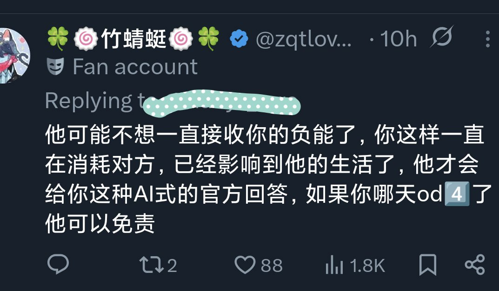
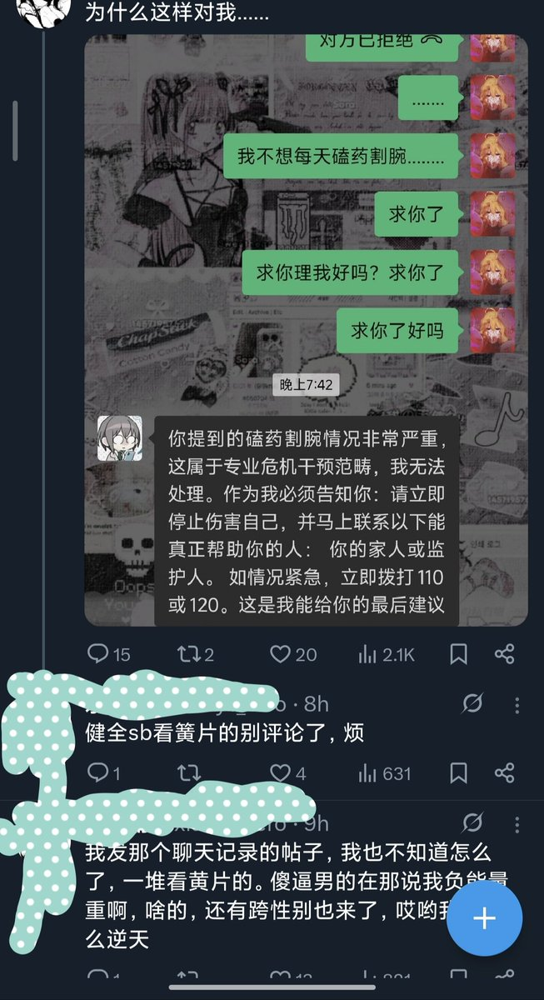

《我不想每天打扰你》但你一直在给对方轰炸《我好崩溃求你理我》《我不想割腕你为什么不理我》你本质上是希望解决问题吗？你只是在表演式卖惨，并且情绪勒索对方。顺便通过网友的贴贴抱抱满足你的虚荣心。对面回你个AI文案已经很给你面子了，搁我身上我直接开骂了。你说对方是第一个这么关心你的人，说明他真的关心过你，但为什么现在不关心了？不就是因为你太烦了吗？
我不是健全人，我也有精神病，如果是上一个主导人格，她就会是你最喜欢的那种陪着你一起崩溃的人。但现在我们把她优化掉了，我现在就是丝毫不受别人道德绑架，对我就是这么"冷漠"，没人有义务当你的免费情绪垃圾桶

我不是健全人，我也有精神病，如果是上一个主导人格，她就会是你最喜欢的那种陪着你一起崩溃的人。但现在我们把她优化掉了，我现在就是丝毫不受别人道德绑架，对我就是这么"冷漠"，没人有义务当你的免费情绪垃圾桶


哎幽默bpd你这么消息轰炸人家说你句负能量重你还不乐意了，上一个这么轰炸我的已经4⃣️了，但你不会死的你就是需要这些网友的安慰来获得满足感。另外给你友情打个码省得你说我fo多网曝你，另外我也不想因为露你ID给你更多流量，最烦这种焦虑型依恋博流量的bpd https://t.co/L7kQdN5QNs